ФГБОУ ВО «Российский университет медицины» Минздрава России ФГАУ «НМИЦ «МНТК «Микрохирургия глаза» им. акад. С.Н. Фёдорова» Минздрава России
40 глаз
в каждой группе · наблюдение 6 месяцев
При смешанном астигматизме одна ось глаза близорукая, а другая — дальнозоркая
РосУниМед · МНТК «Микрохирургия глаза»
2 / 24
Как это выглядит
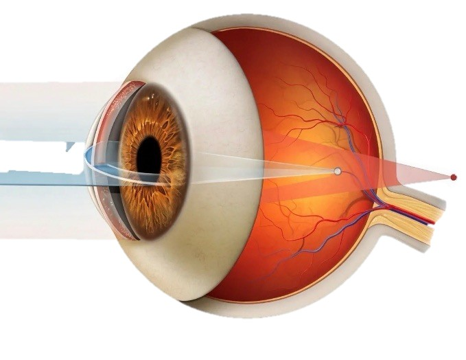
−
Близорукий меридиан: лучи фокусируются перед сетчаткой
+
Дальнозоркий меридиан: лучи фокусируются за сетчаткой
Астигматизм во многом передаётся по наследству
РосУниМед · МНТК «Микрохирургия глаза»
3 / 24
Полногеномные исследования
50+
вариантов генов (полиморфизмов) связаны с астигматизмом
10 генов
в которых нашли эти варианты
PDGFRA
ген, который влияет на кривизну роговицы
Shing E. et al. Am J Ophthalmol. 2025;269:161–171
Сегодня смешанный астигматизм исправляют эксимерным лазером. А лентикулярным?
РосУниМед · МНТК «Микрохирургия глаза»
4 / 24
Эксимерлазерная технология
ФемтоЛАЗИК
Сейчас это «золотой» стандарт коррекции смешанного астигматизма
Азар Д.Т. и соавт., ГЭОТАР-Медиа, 2025 Клокова О.А. и соавт., Офтальмология, 2025
Лентикулярная технология
SMILE
Для смешанного астигматизма в обычной практике пока не применяется
?
В мире лентикулярную коррекцию смешанного астигматизма только начинают изучать
РосУниМед · МНТК «Микрохирургия глаза»
5 / 24
2024
Пилотное исследование · VisuMax (Zeiss)
Показали, что исправить смешанный астигматизм лентикулярной хирургией возможно
Ganesh S. et al., 2024
2025
Опыт ex vivo · ELITA (Johnson & Johnson)
На 11 свиных глазах показали, что коррекция технически выполнима
Mehta-Hurt D. et al., ARVO, 2025
Готовой методики для клиник пока нет — её мы и разработали
Цель
Разработать лентикулярную технологию для коррекции смешанного астигматизма
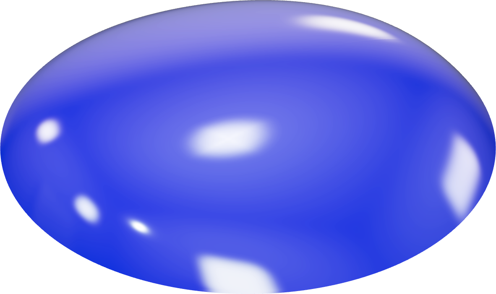
6 / 24
Мы сравнили две группы по 20 пациентов (40 глаз)
РосУниМед · МНТК «Микрохирургия глаза»
7 / 24
Группа 1
SMILE
Лентикулярная технология VisuMax, Carl Zeiss Meditec
40 глаз
Группа 2
ФемтоЛАЗИК
Эксимерлазерная технология WaveLight FS200 + EX500, Alcon
40 глаз
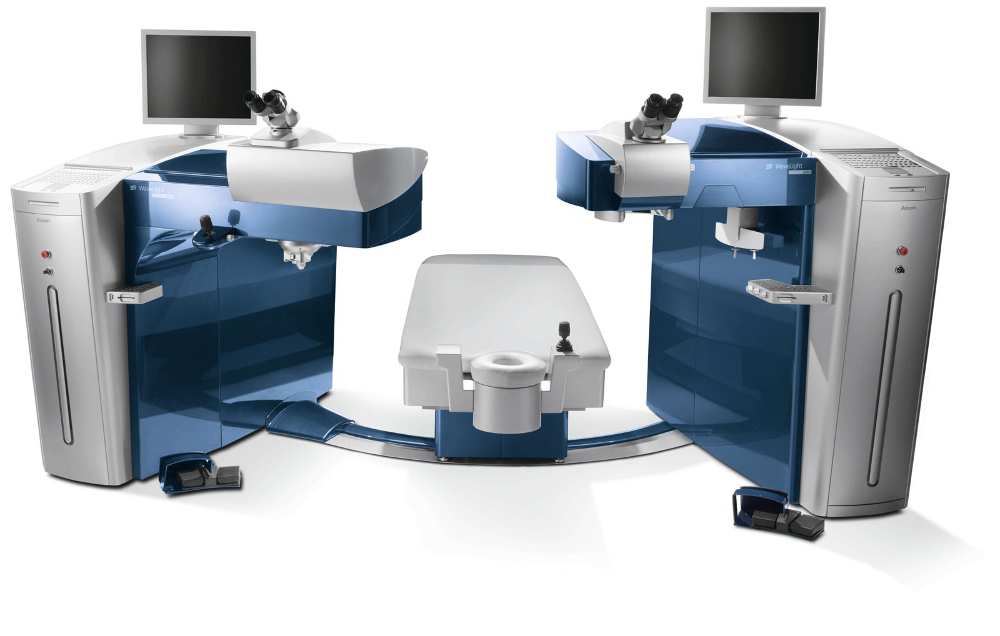
Осмотры:
до операции
1 сутки
3 месяца
6 месяцев
Кого включали в исследование
РосУниМед · МНТК «Микрохирургия глаза»
8 / 24
Включали
— 18 лет и старше — диагноз «смешанный астигматизм» — острота зрения в очках (МКОЗ) 0,3 и выше — толщина роговицы 470 мкм и больше — нет признаков кератоконуса по BAD
Для SMILE дополнительно:
Sph ≤ +1,75 D · Cyl ≥ −5,0 D SE ≤ −0,75 D
Не включали
— младше 18 лет — болезни роговицы: кератоконус, дистрофии, помутнения, рубцы, неоваскуляризация, кератопластика в прошлом — МКОЗ ниже 0,3 или роговица тоньше 470 мкм — ЛАЗИК в прошлом — глаукома (кроме начальной), катаракта (кроме врождённой) — воспаление или системные болезни в обострении — беременность и кормление грудью — для SMILE: рефракция вне указанных границ
Какими были глаза до операции
РосУниМед · МНТК «Микрохирургия глаза»
9 / 24
SMILE
ФемтоЛАЗИК
Сфера, D
+0,25…+1,75 (+0,54 ± 0,39)
+0,25…+3,00 (+1,25 ± 0,81)
Цилиндр, D
−2,00…−5,00 (−3,07 ± 0,93)
−1,25…−6,00 (−3,24 ± 2,03)
Кератометрия, D K1 / K2 / Kср
41,58 / 44,44 / 43,00
41,69 / 44,76 / 43,22
Толщина роговицы, мкм
494…615 (554,1 ± 36,2)
483…596 (537,1 ± 30,8)
Средний возраст
31,2
лет в группе SMILE 29,2 — в группе ФемтоЛАЗИК
Мужчины
55%
в группе SMILE (11 из 20) 35% — в группе ФемтоЛАЗИК (7 из 20)
Как обследовали пациентов
РосУниМед · МНТК «Микрохирургия глаза»
10 / 24
Стандартно
Визометрия — острота зрения без очков и в очках, в обычных условиях и с расширенным зрачком
Рефрактометрия и кератометрия — тоже в двух режимах
Тонометрия, биометрия, периметрия
Биомикроскопия и офтальмоскопия
Дополнительно
Кератотопография — Pentacam AXL (Oculus)
Упругость роговицы — Corvis ST (Oculus)
Аберрометрия — KR-1W (Topcon)
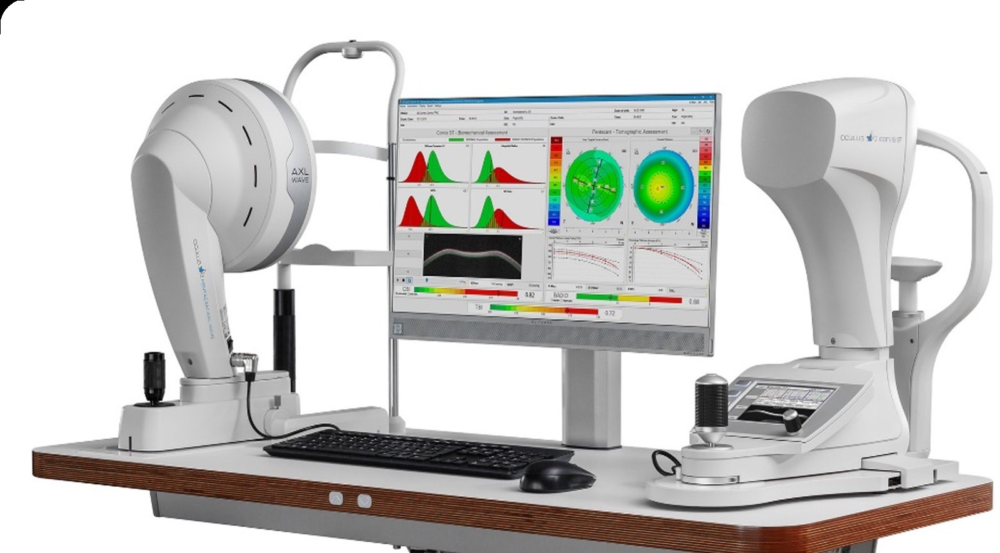
Как пересчитать рефракцию для SMILE: пять шагов
РосУниМед · МНТК «Микрохирургия глаза»
11 / 24
01
Проверяем, подходит ли глаз
Sph ≤ +1,75 D Cyl ≥ −5,0 D SE ≤ −0,75 D
02
Переносим сферу
SPH′ = SPH + CYL
03
Меняем знак цилиндра
CYL′ = −CYL
04
Поворачиваем ось на 90°
ось ≤ 90° → +90° ось > 90° → −90°
05
Вводим данные в VisuMax
миопия до −10,0 D цилиндр до −5,0 D
Пример расчёта
+0,25 −3,00 × 5°
→
−2,75 +3,00 × 95°
Розенблюм Ю.З. Оптометрия, 1996
Перед операцией размечаем роговицу, чтобы точно попасть в ось
РосУниМед · МНТК «Микрохирургия глаза»
12 / 24
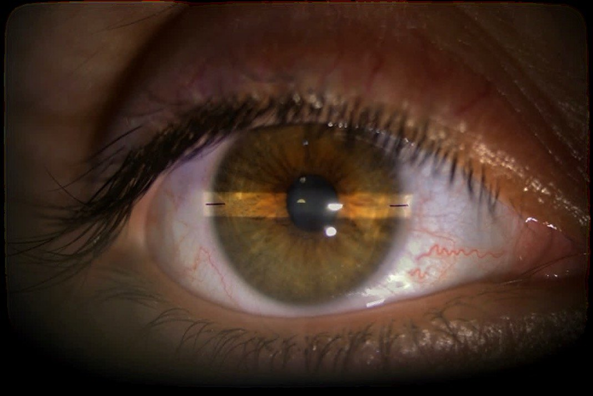
Зачем это нужно
Лёжа глаз может немного повернуться вокруг своей оси — это циклоторсия.
Пример операции: лазер получил пересчитанные данные
РосУниМед · МНТК «Микрохирургия глаза»
13 / 24
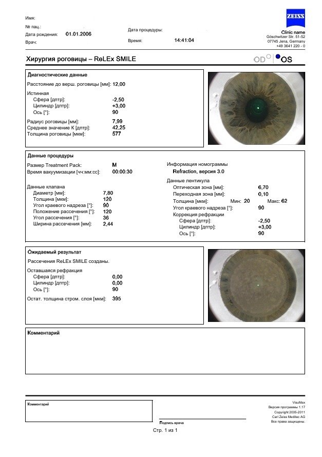
Введено в VisuMax
Правый глаз
−2,75 +3,00 × 95°
Левый глаз
−2,50 +3,00 × 90°
Оптическая зона — 6,7 мм По плану остаточная рефракция — 0,00
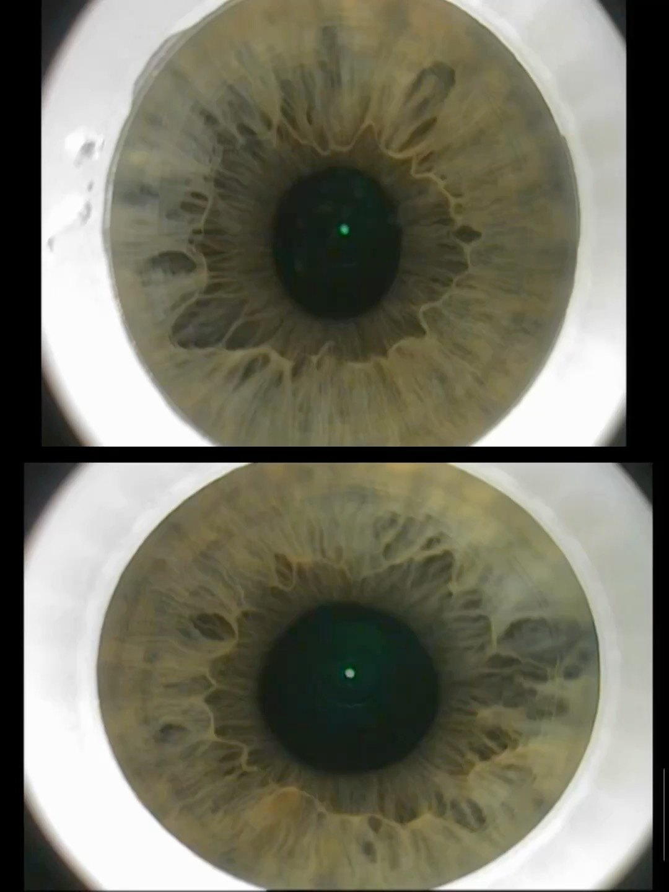
Оперирующий хирург — д.м.н. Костенев С.В.
Настройки лазеров
РосУниМед · МНТК «Микрохирургия глаза»
14 / 24
SMILE · VisuMax, режим «быстрый»
Оптическая зона
6,7 мм
Переходная зона
0,10 мм
Диаметр кэпа
7,8–7,9 мм
Толщина кэпа
120 мкм
Угол краевого надреза
90°
Длина разреза
2,0–2,4 мм
Интерфейс
S или M
Число разрезов
1
ФемтоЛАЗИК · WaveLight FS200 + EX500
Оптическая зона
6,5 мм
Переходная зона
1,2 мм
Толщина флэпа
110 мкм
Общая зона абляции
8,9 мм
Номограмма
S 001
Ножка флэпа
90°, 0,6 мм
Остальное
подбирали индивидуально
При смешанном астигматизме лентикула имеет форму седла
РосУниМед · МНТК «Микрохирургия глаза»
15 / 24
Математическая модель
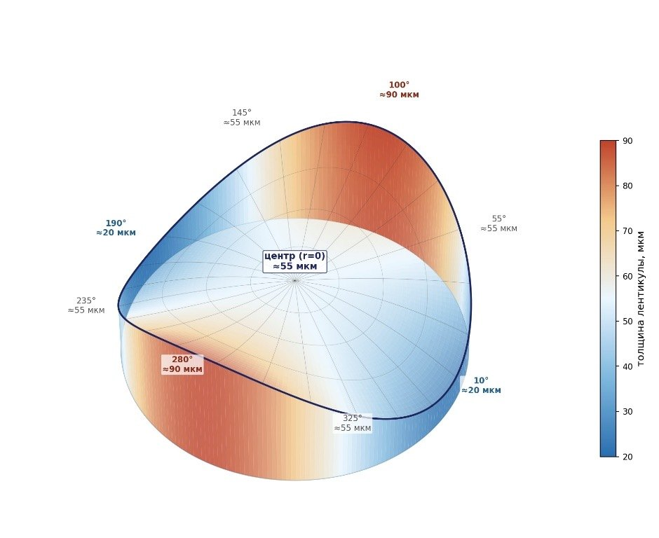
Толщина лентикулы
T(r,θ) = C + A·(r/R)²·cos 2(θ − ось)
C = (Max + Tmin) / 2 · A = (Max − Tmin) / 2 R = S / 2 · Tmin ≈ 20 мкм Max = S²/6 · (2|Sph′| + |Cyl′|)
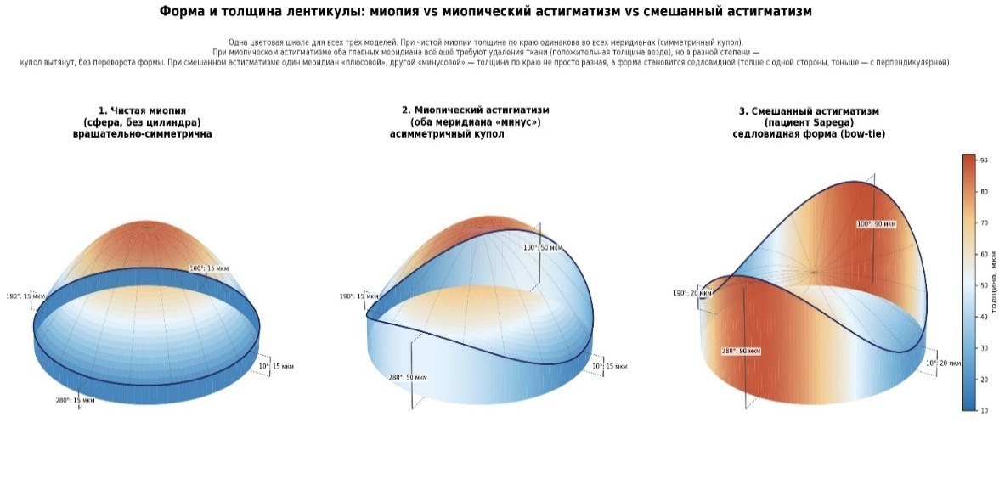
Без очков пациенты стали видеть в 2 раза лучше
РосУниМед · МНТК «Микрохирургия глаза»
16 / 24
Острота зрения без очков (НКОЗ)
SMILE, 3 месяца
0,88
было 0,34
Через 1 сутки
0,73 / 0,54
после SMILE зрение восстанавливается быстрее
Зрение в очках не ухудшилось ни в одной группе
РосУниМед · МНТК «Микрохирургия глаза»
17 / 24
Острота зрения в очках (МКОЗ)
Индекс безопасности
1,03
SMILE
Индекс безопасности
1,02
ФемтоЛАЗИК
Сфера после операции в обеих группах остаётся небольшой
РосУниМед · МНТК «Микрохирургия глаза»
18 / 24
Сферический компонент, D
SMILE
+0,62
через 6 мес. (было +0,54)
ФемтоЛАЗИК
+0,31
через 6 мес. (было +1,25)
Цилиндр после SMILE снизился сильнее, чем после ФемтоЛАЗИК
РосУниМед · МНТК «Микрохирургия глаза»
19 / 24
Цилиндрический компонент, D
SMILE · 6 месяцев
−0,62
дптр
было −3,07
1 сутки
−0,51
ФемтоЛАЗИК −1,13
3 месяца
−0,44
ФемтоЛАЗИК −1,19
6 месяцев
−0,62
ФемтоЛАЗИК −1,25
Как изменилась роговица через 6 месяцев
РосУниМед · МНТК «Микрохирургия глаза»
20 / 24
Толщина, мкм
−53 / −36 мкм
изменение: SMILE / ФемтоЛАЗИК
K1, D
−0,80 / +0,14 D
изменение: SMILE / ФемтоЛАЗИК
K2, D
−2,66 / −1,93 D
изменение: SMILE / ФемтоЛАЗИК
Результат SMILE хорошо совпал с планом
РосУниМед · МНТК «Микрохирургия глаза»
21 / 24
SMILE · отклонение от плана
74%
глаз в пределах ±0,5 D
88%
глаз в пределах ±1,0 D
Связь плана и результата
R² = 0,65
Чем больше запланированная коррекция, тем больше и достигнутая: точки на графике лежат близко к линии «план = результат»
Методика защищена патентом, а расчёт — программой
РосУниМед · МНТК «Микрохирургия глаза»
22 / 24
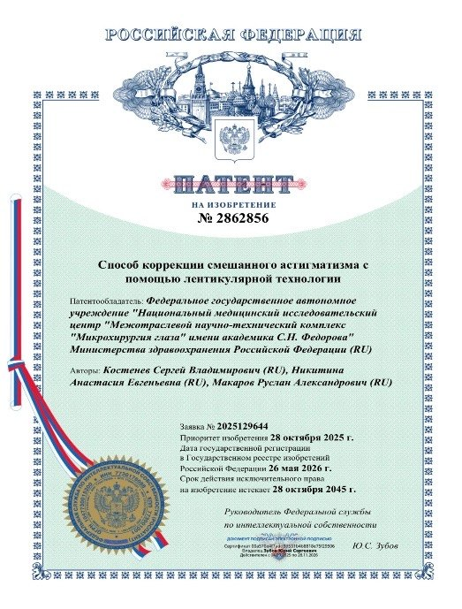
Патент № 2862856
«Способ коррекции смешанного астигматизма с помощью лентикулярной технологии»
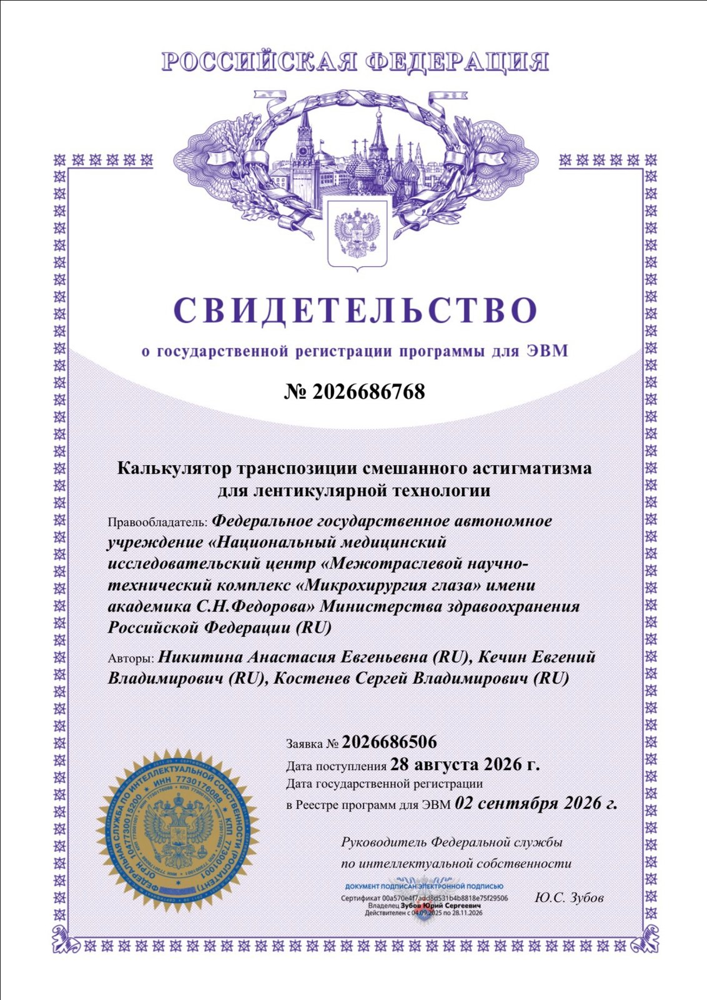
Программа для ЭВМ № 2026686768
«Калькулятор транспозиции смешанного астигматизма для лентикулярной технологии»
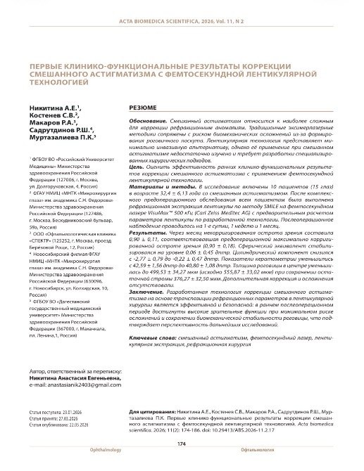
Статья с первыми результатами
клинико-функциональные результаты коррекции смешанного астигматизма
Выводы
РосУниМед · МНТК «Микрохирургия глаза»
23 / 24
01
Математическая модель показала, что лентикула при смешанном астигматизме имеет седловидную (торическую) форму. Это научно обосновывает протокол транспозиции.
02
НКОЗ выросла в обеих группах: SMILE 0,34 → 0,88, ФемтоЛАЗИК 0,32 → 0,75. После SMILE зрение восстанавливается быстрее и полнее. МКОЗ осталась высокой: 0,91 → 1,0 и 0,87 → 0,95.
03
Сфера приблизилась к нулю: +0,54 → +0,37 D и +1,25 → +0,31 D. Цилиндр снизился: −3,07 → −0,62 D и −3,24 → −1,25 D — после SMILE остаточный цилиндр втрое меньше.
04
Лентикулярная технология эффективна, безопасна и перспективна при смешанном астигматизме. Нужны новые клинические данные и статистический анализ.